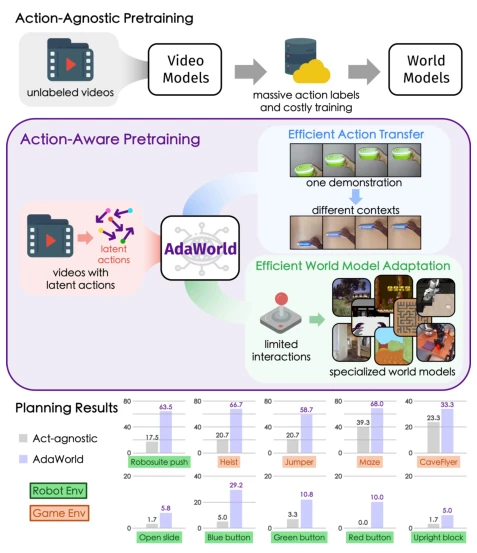
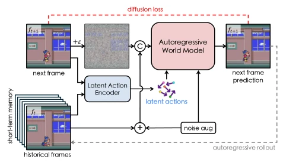
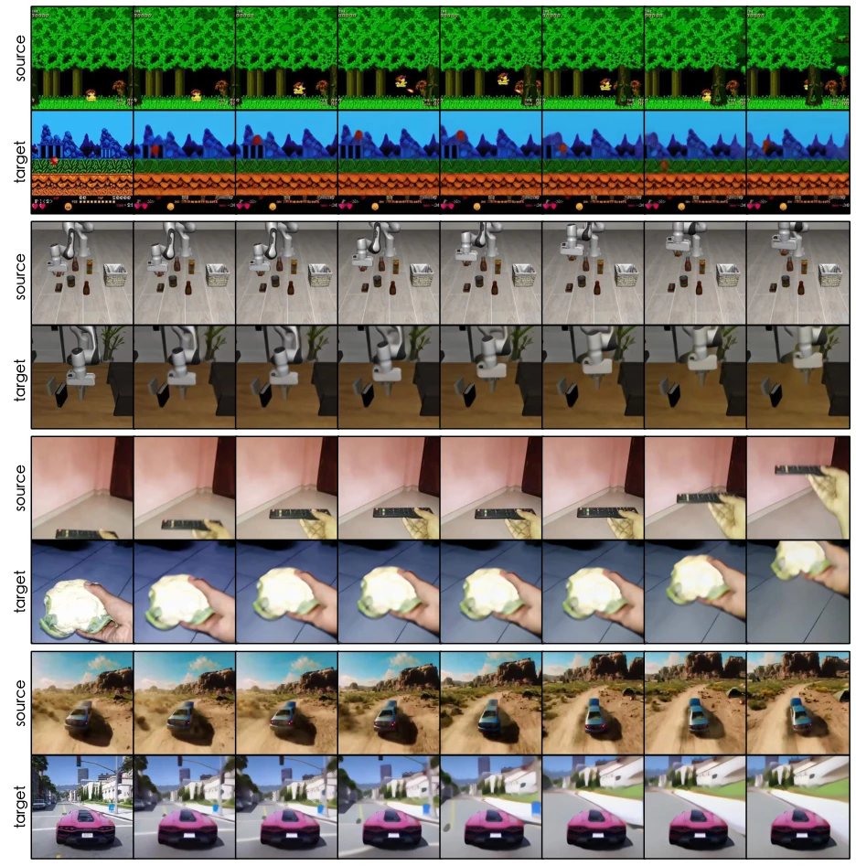
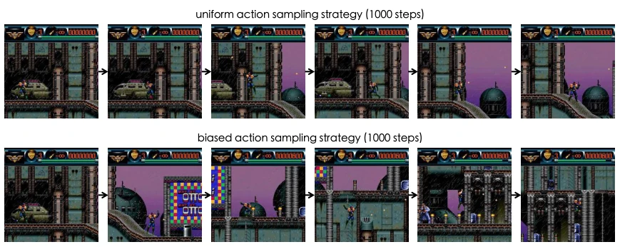
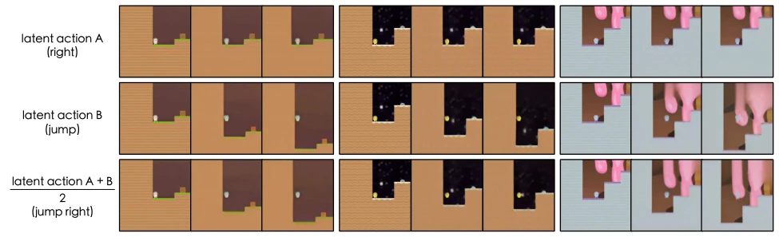
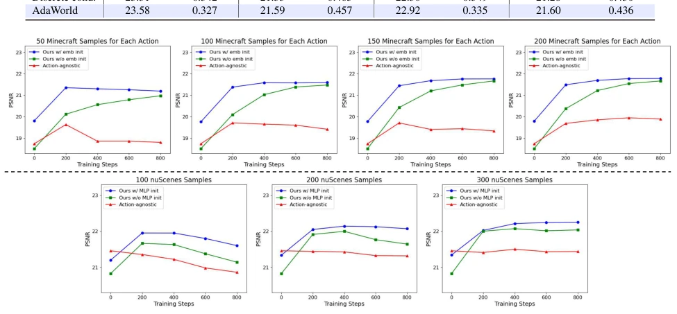
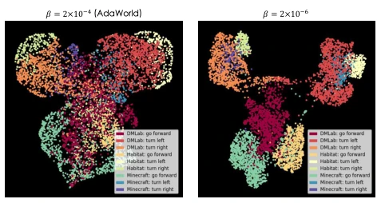
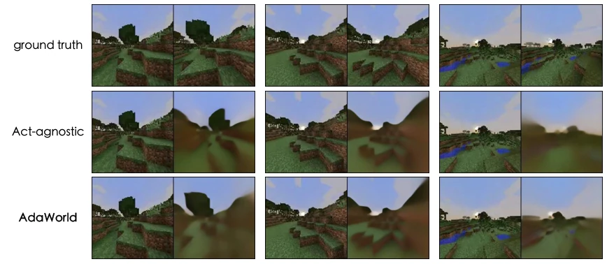
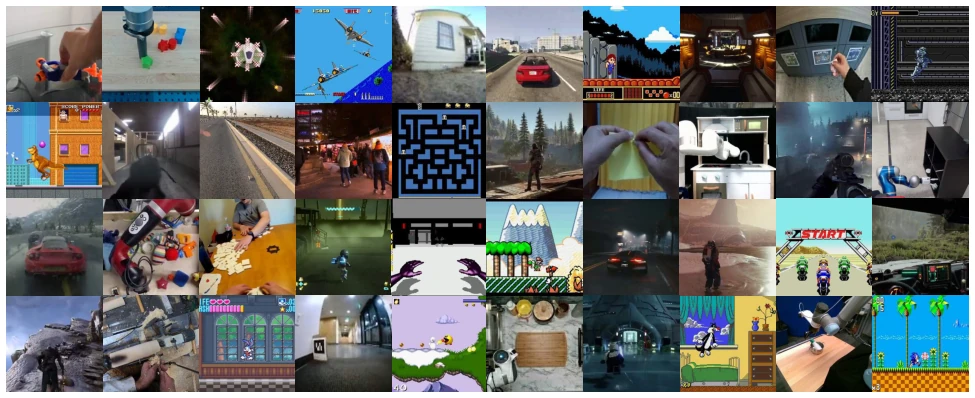
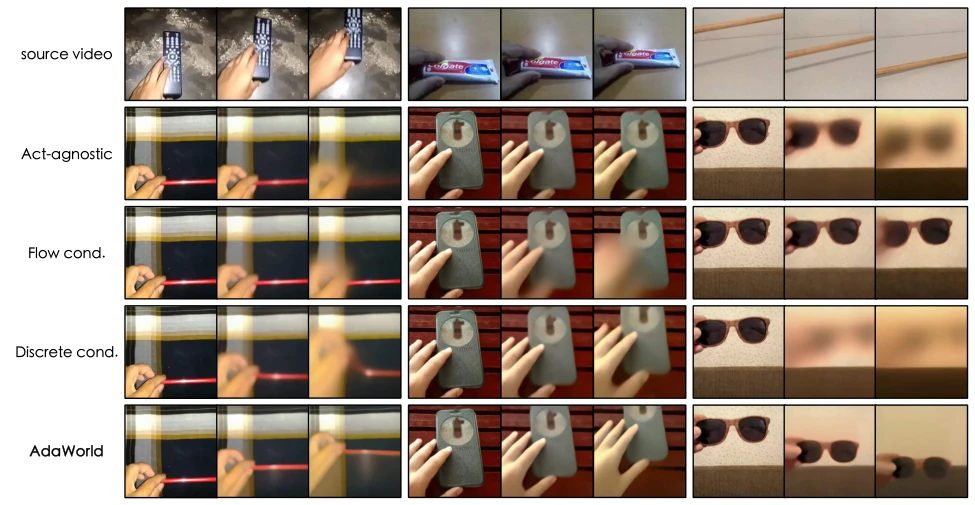

AdaWorld: Learning Adaptable World Models with Latent Actions
Shenyuan Gao, Siyuan Zhou, Yilun Du, Jun Zhang, Chuang Gan abspdf
论文点评Review
AdaWorld 这招“潜动作”确实有点东西，试图用自监督学习把动作从背景里“抠”出来，解决了世界模型适配新环境要重新标注的痛点。但别高兴太早，它本质上还是靠海量视频预训练堆出来的“通用常识”，推理速度也没提实时性，离真·实时控制还有距离。最毒舌的是，虽然号称零样本迁移，但实际效果依赖预训练数据的多样性，一旦遇到训练集没见过的物理规律，估计也得歇菜。不过，在规划任务上吊打无动作基线，确实证明了“懂动作”比“会预测”更重要，给 Embodied AI 的世界模型赛道加了个新维度，值得跟进但别神话。
AdaWorld's "latent action" approach is indeed noteworthy, attempting to "extract" actions from the background using self-supervised learning, addressing the pain point of world models requiring re-annotation when adapting to new environments. However, do not get too excited; essentially, it relies on "general common sense" accumulated from massive video pre-training, and inference speed does not address real-time requirements, remaining distant from true real-time control. The most critical point is that although claiming zero-shot transfer, the actual performance depends on the diversity of pre-training data; once encountering physical laws unseen in the training set, it is likely to fail. Nevertheless, significantly outperforming the no-action baseline in planning tasks indeed proves that "understanding actions" is more important than "predicting", adding a new dimension to the Embodied AI world model track. It is worth following but should not be overhyped.
研究动机Motivation
现有世界模型（如 Cosmos, Vista）大多依赖大量动作标注数据或昂贵训练才能在新环境实现精确控制（Wu et al., 2023; Gao et al., 2024）。人类能凭少量经验理解动作，但机器不行，因为视频中的动作常与背景纠缠，难以提取通用表征（Rybkin et al., 2019）。现有方法定义统一动作格式困难，适应新环境需重新训练（Chi et al., 2024）。AdaWorld 想模仿人类，从观察中学习可迁移的动作表征，减少对新标注的依赖，实现高效适应。这解决了具身智能跨域迁移的核心瓶颈。
Existing world models (e.g., Cosmos, Vista) mostly rely on large amounts of action-annotated data or expensive training to achieve precise control in new environments (Wu et al., 2023; Gao et al., 2024). While humans can understand actions with minimal experience, machines struggle because actions in videos are often entangled with backgrounds, hindering the extraction of general representations (Rybkin et al., 2019). Current methods face difficulties in defining a unified action format and require retraining to adapt to new environments (Chi et al., 2024). AdaWorld seeks to mimic humans by learning transferable action representations from observation, reducing reliance on new annotations to achieve efficient adaptation. This addresses the core bottleneck of cross-domain transfer in embodied intelligence.

Figure 1. Different world model learning paradigms. Prior meth- ods often require expensive labeling and training to achieve action controllability in new environments. To overcome this, we intro- duce latent actions as a unified condition for action-aware pretrain- ing from videos, enabling highly adaptable world modeling. Our world model, dubbed AdaWorld, can readily transfer actions across contexts without training. By initializing the control interface with the corresponding latent actions, AdaWorld can also be adapted into specialized world models efficiently and achieve significantly better planning results than the action-agnostic baseline.
The overall process is divided into two steps: first training the latent action autoencoder, followed by pretraining the world model. 1. Latent Action Autoencoder: Input two video frames, extract features using a Transformer, and compress them into continuous latent variables $\tilde{a}$ via the Information Bottleneck. Utilize $\beta$-VAE loss to balance expressiveness and disentanglement, ensuring $\tilde{a}$ contains only action information rather than background. 2. Action-Aware Pretraining: Construct a diffusion world model based on SVD, with conditional inputs comprising historical frames plus latent actions. It supports frame-level control and autoregressive generation during inference. The innovation lies in using latent actions extracted from unlabeled videos as a unified condition, enabling the model to learn "action semantics" rather than action mappings specific to certain environments. By adjusting the $\beta$ parameter, a balance is found between expressiveness and disentanglement to achieve cross-environment action transfer. Additionally, it supports action composition, generating new actions through latent space interpolation, which enhances flexibility.

Figure 3. Action-aware pretraining. We extract latent actions from unlabeled videos using the latent action encoder. By lever- aging the extracted actions as a unified condition, we pretrain a world model that can perform autoregressive rollouts at inference.

Figure 4. Action transfer from demonstrations. By extracting and reusing the latent actions in different contexts, AdaWorld can readily transfer the demonstrated actions from source videos to various target scenes without training. Please see Appendix C for more results.

Figure 8. Effect of our biased action sampling strategy. Compared to the uniform action sampling strategy, our biased scheme enables agents to explore longer horizons.
Tested in environments such as Procgen, Habitat, and Minecraft. Baselines include no-action pretraining, optical flow conditioning, and discrete latent actions. Metrics include FVD, PSNR, and planning success rate. Results: AdaWorld achieves significantly lower FVD on action transfer (LIBERO/SSv2), with a human evaluation pass rate of 70%+. In planning tasks (MPC), it outperforms Q-learning without fine-tuning. Ablation studies show that data diversity improves generalization, and the $\beta$ parameter affects disentanglement. It also performs excellently on the robot task VP2, demonstrating generality.

Figure 5. Action composition. We compose two actions by averaging their latent actions in the continuous latent space, resulting in a new action that merges the functions of both. This indicates that our latent action space is semantically continuous in the meanings of actions.

Figure 6. PSNR curves for world model adaptation. With limited samples and training steps, AdaWorld adapts to the action controls of new environments more rapidly than conventional pretraining methods.

Figure 7. UMAP of latent actions. Reducing the value of β in- creases expressiveness but sacrifices disentanglement from context.

Figure 11. Minecraft adaptation results after finetuning 800 steps with 100 samples for each action. Our approach efficiently achieves precise action controllability with minimal action-labeled data and finetuning, while the action-agnostic pretraining baseline fails to perform the correct actions.
其他图片Other Figures

Figure 9. Diversity of our training dataset. Our curated dataset aggregates an extremely wide range of scenarios.

Figure 10. Qualitative comparison of action transferability. AdaWorld can accurately identify the demonstrated action and precisely transfer it to another context, while the other baselines fall short in doing so.